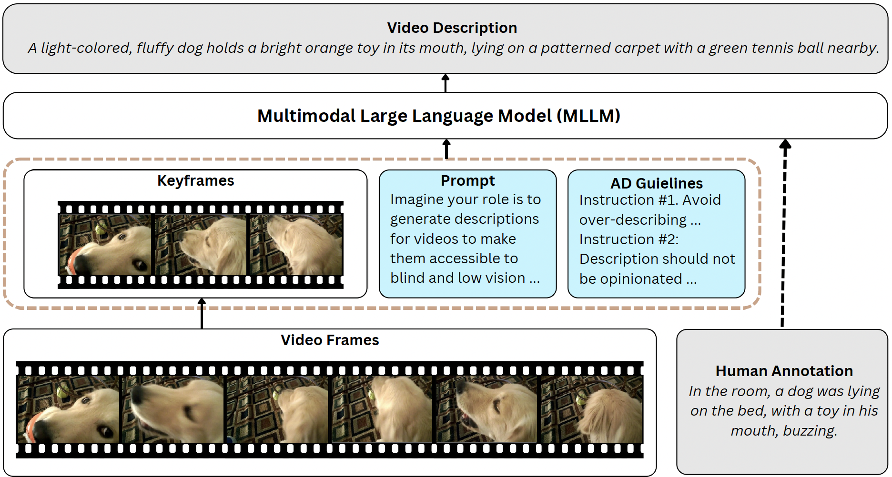

-

-
Chaoyu Li
Ph.D. Student
Arizona State University


I am a 3rd-year Ph.D. student in Computer Science at Arizona State University, advised by Prof. Pooyan Fazli. Before that, I got my master's degree from the University of Southern California.
My research interests mainly lie in computer vision, especially in:
- * Multimodal Large Language Models: MLLMs in video understanding; Hallucination detection in MLLMs; Enhancing video accessibility through MLLMs.
- * Post-Training Alignment & Robustness: Post-training methods for improving vision–language model reliability, including temporal consistency modeling in video understanding, robustness against distorted or adversarial visual inputs, and alignment techniques for safety-critical video reasoning.
- * Efficient Multimodal Learning: Token- and frame-efficient training for video and multimodal models, including adaptive token pruning, dynamic keyframe selection, and compute-aware model design that maintains accuracy with significantly reduced visual or textual input.
| Feb 26, 2025 | Our paper VidHalluc: Evaluating Temporal Hallucinations in Multimodal Large Language Models for Video Understanding was accepted to CVPR 2025. |
|---|---|
| Jan 16, 2025 | Our paper VideoA11y: Method and Dataset for Accessible Video Description was accepted to CHI 2025. |
| Aug 17, 2023 | Became a Ph.D. student at ASU, advised by Prof. Pooyan Fazli. |
| May 16, 2022 | Joined USC IRIS Computer Vision Lab, advised by Prof. Ram Nevatia. |
| Aug 23, 2021 | Became a master student at USC. |
| May 28, 2021 | Our paper Infrared Action Detection in the Dark via Cross-Stream Attention Mechanism paper was accepted to TMM 2021. |
-

-
VidHalluc: Evaluating Temporal Hallucinations in Multimodal Large Language Models
for Video UnderstandingChaoyu Li, Eun Woo Im, Pooyan Fazli.
IEEE/CVF Conference on Computer Vision and Pattern Recognition (CVPR) , 2025
arXiv Project
- 
-
VideoA11y: Method and Dataset for Accessible Video Description
Chaoyu Li, Sid Padmanabhuni, Maryam S Cheema, Hasti Seifi, Pooyan Fazli.
ACM SIGCHI Conference on Human Factors in Computing Systems (CHI) , 2025
arXiv Project
-

-
Infrared Action Detection in the Dark via Cross-Stream Attention Mechanism
Xu Chen*, Chenqiang Gao*, Chaoyu Li, Yi Yang, Deyu Meng.
IEEE Transactions on Multimedia(TMM) , 2021
PDF
-

-
NTT CQUPT@TRECVID2019 ActEV: Activities in Extended Video
Yongqing Sun, Xu Chen, Chaoyu Li et al.
TREC Video Retrieval Evaluation (TRECVID), 2019
PDF
-

-
Face Anti-Spoofing Based on Multi-layer Domain Adaptation
Fengshun Zhou*, Chenqiang Gao*, Fang Chen, Chaoyu Li, Xindou Li, Feng Yang, Yue Zhao.
IEEE International Conference on Multimedia & Expo Workshops (ICMEW) , 2019
PDF